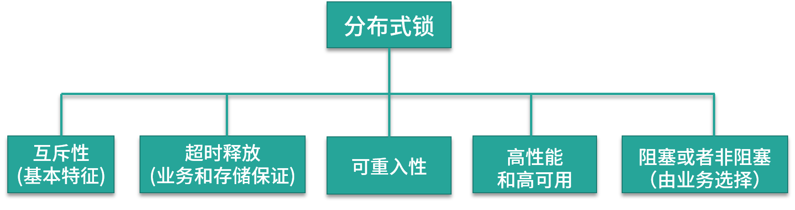

- 00 开篇词：搭建分布式知识体系，挑战高薪 Offer.md.html
- 01 如何证明分布式系统的 CAP 理论？.md.html
- 02 不同数据一致性模型有哪些应用？.md.html
- 03 如何透彻理解 Paxos 算法？.md.html
- 04 ZooKeeper 如何保证数据一致性？.md.html
- 05 共识问题：区块链如何确认记账权？.md.html
- 06 如何准备一线互联网公司面试？.md.html
- 07 分布式事务有哪些解决方案？.md.html
- 08 对比两阶段提交，三阶段协议有哪些改进？.md.html
- 09 MySQL 数据库如何实现 XA 规范？.md.html
- 10 如何在业务中体现 TCC 事务模型？.md.html
- 11 分布式锁有哪些应用场景和实现？.md.html
- 12 如何使用 Redis 快速实现分布式锁？.md.html
- 13 分布式事务考点梳理 + 高频面试题.md.html
- 14 如何理解 RPC 远程服务调用？.md.html
- 15 为什么微服务需要 API 网关？.md.html
- 16 如何实现服务注册与发现？.md.html
- 17 如何实现分布式调用跟踪？.md.html
- 18 分布式下如何实现配置管理？.md.html
- 19 容器化升级对服务有哪些影响？.md.html
- 20 ServiceMesh：服务网格有哪些应用？.md.html
- 21 Dubbo vs Spring Cloud：两大技术栈如何选型？.md.html
- 22 分布式服务考点梳理 + 高频面试题.md.html
- 23 读写分离如何在业务中落地？.md.html
- 24 为什么需要分库分表，如何实现？.md.html
- 25 存储拆分后，如何解决唯一主键问题？.md.html
- 26 分库分表以后，如何实现扩容？.md.html
- 27 NoSQL 数据库有哪些典型应用？.md.html
- 28 ElasticSearch 是如何建立索引的？.md.html
- 29 分布式存储考点梳理 + 高频面试题.md.html
- 30 消息队列有哪些应用场景？.md.html
- 31 集群消费和广播消费有什么区别？.md.html
- 32 业务上需要顺序消费，怎么保证时序性？.md.html
- 33 消息幂等：如何保证消息不被重复消费？.md.html
- 34 高可用：如何实现消息队列的 HA？.md.html
- 35 消息队列选型：Kafka 如何实现高性能？.md.html
- 36 消息队列选型：RocketMQ 适用哪些场景？.md.html
- 37 消息队列考点梳理 + 高频面试题.md.html
- 38 不止业务缓存，分布式系统中还有哪些缓存？.md.html
- 39 如何避免缓存穿透、缓存击穿、缓存雪崩？.md.html
- 40 经典问题：先更新数据库，还是先更新缓存？.md.html
- 41 失效策略：缓存过期都有哪些策略？.md.html
- 42 负载均衡：一致性哈希解决了哪些问题？.md.html
- 43 缓存高可用：缓存如何保证高可用？.md.html
- 44 分布式缓存考点梳理 + 高频面试题.md.html
- 45 从双十一看高可用的保障方式.md.html
- 46 高并发场景下如何实现系统限流？.md.html
- 47 降级和熔断：如何增强服务稳定性？.md.html
- 48 如何选择适合业务的负载均衡策略？.md.html
- 49 线上服务有哪些稳定性指标？.md.html
- 50 分布式下有哪些好用的监控组件？.md.html
- 51 分布式下如何实现统一日志系统？.md.html
- 52 分布式路漫漫，厚积薄发才是王道.md.html
12 如何使用 Redis 快速实现分布式锁？
本课时我们来讨论如何使用 Redis 快速实现分布式锁。
分布式锁有很多种解决方案，前面简单介绍过，Redis 可以通过 set key 方式来实现分布式锁，但实际情况要更加复杂，比如如何确保临界资源的串行执行，如何及时释放，都是需要额外考虑的。
今天这一课时要讲的是一个完备的分布式锁应该具备哪些特性，以及如何使用 Redis 来一步步优化实现。 分布式锁需要具有哪些特点 先来看一下，一个完备的分布式锁，需要支持哪些特性？

一般来说，生产环境可用的分布式锁需要满足以下几点：
- 互斥性，互斥是锁的基本特征，同一时刻只能有一个线程持有锁，执行临界操作；
- 超时释放，超时释放是锁的另一个必备特性，可以对比 MySQL InnoDB 引擎中的 innodb_lock_wait_timeout 配置，通过超时释放，防止不必要的线程等待和资源浪费；
- 可重入性，在分布式环境下，同一个节点上的同一个线程如果获取了锁之后，再次请求还是可以成功；
- 高性能和高可用，加锁和解锁的开销要尽可能的小，同时也需要保证高可用，防止分布式锁失效；
- 支持阻塞和非阻塞性，对比 Java 语言中的 wait() 和 notify() 等操作，这个一般是在业务代码中实现，比如在获取锁时通过 while(true) 或者轮询来实现阻塞操作。
可以看到，实现一个相对完备的分布式锁，并不是锁住资源就可以了，还需要满足一些额外的特性，否则会在业务开发中出现各种各样的问题。
下面我们以 Redis 实现分布式锁为例，看一下如何优化分布式锁的具体实现。
使用 setnx 实现分布式锁
Redis 支持 setnx 指令，只在 key 不存在的情况下，将 key 的值设置为 value，若 key 已经存在，则 setnx 命令不做任何动作。使用 setnx 实现分布式锁的方案，获取锁的方法很简单，只要以该锁为 key，设置一个随机的值即可。如果 setnx 返回 1，则说明该进程获得锁；如果 setnx 返回 0，则说明其他进程已经获得了锁，进程不能进入临界区；如果需要阻塞当前进程，可以在一个循环中不断尝试 setnx 操作。
if(setnx(key,value)==1){
try{
//业务处理
}finally{
//释放锁
del(key)
}
}
释放锁时只要删除对应的 key 就可以，为了防止系统业务进程出现异常导致锁无法释放，使用 Java 中的 try-catch-finally 来完成锁的释放。
对比一下上面说的分布式锁特性，使用这种方式实现分布式锁的问题很明显：不支持超时释放锁，如果进程在加锁后宕机，则会导致锁无法删除，其他进程无法获得锁。
使用 setnx 和 expire 实现
在分布式锁的实现中，依赖业务线程进行锁的释放，如果进程宕机，那么就会出现死锁。Redis 在设置一个 key 时，支持设置过期时间，利用这一点，可以在缓存中实现锁的超时释放，解决死锁问题。
在使用 setnx 获取锁之后，通过 expire 给锁加一个过期时间，利用 Redis 的缓存失效策略，进行锁的超时清除。
伪代码如下：
if(setnx(key,value)==1){
expire(key,expireTime)
try{
//业务处理
}finally{
//释放锁
del(key)
}
}
通过设置过期时间，避免了占锁到释放锁的过程发生异常而导致锁无法释放的问题，但是在 Redis 中，setnx 和 expire 这两条命令不具备原子性。如果一个线程在执行完 setnx 之后突然崩溃，导致锁没有设置过期时间，那么这个锁就会一直存在，无法被其他线程获取。
使用 set 扩展命令实现
为了解决这个问题，在 Redis 2.8 版本中，扩展了 set 命令，支持 set 和 expire 指令组合的原子操作，解决了加锁过程中失败的问题。
set 扩展参数的语法如下：
redis> SET key value expireTime nx
nx 表示仅在键不存在时设置，这样可以在同一时间内完成设置值和设置过期时间这两个操作，防止设置过期时间异常导致的死锁。那么这种方式还存在问题吗？
使用 setex 方式看起来解决了锁超时的问题，但在实际业务中，如果对超时时间设置不合理，存在这样一种可能：在加锁和释放锁之间的业务逻辑执行的太长，以至于超出了锁的超时限制，缓存将对应 key 删除，其他线程可以获取锁，出现对加锁资源的并发操作。
我们来模拟下这种情况：
- 客户端 A 获取锁的时候设置了 key 的过期时间为 2 秒，客户端 A 在获取到锁之后，业务逻辑方法执行了 3 秒；
- 客户端 A 获取的锁被 Redis 过期机制自动释放，客户端 B 请求锁成功，出现并发执行；
- 客户端 A 执行完业务逻辑后，释放锁，删除对应的 key；
- 对应锁已经被客户端 B 获取到了，客户端A释放的锁实际是客户端B持有的锁。
可以看到，第一个线程的逻辑还没执行完，第二个线程也成功获得了锁，加锁的代码或者资源并没有得到严格的串行操作，同时由于叠加了删除和释放锁操作，导致了加锁的混乱。
如何避免这个问题呢？首先，基于 Redis 的分布式锁一般是用于耗时比较短的瞬时性任务，业务上超时的可能性较小；其次，在获取锁时，可以设置 value 为一个随机数，在释放锁时进行读取和对比，确保释放的是当前线程持有的锁，一般是通过 Redis 结合 Lua 脚本的方案实现；最后，需要添加完备的日志，记录上下游数据链路，当出现超时，则需要检查对应的问题数据，并且进行人工修复。
分布式锁的高可用
上面分布式锁的实现方案中，都是针对单节点 Redis 而言的，在生产环境中，为了保证高可用，避免单点故障，通常会使用 Redis 集群。
集群下分布式锁存在哪些问题
集群环境下，Redis 通过主从复制来实现数据同步，Redis 的主从复制（Replication）是异步的，所以单节点下可用的方案在集群的环境中可能会出现问题，在故障转移（Failover） 过程中丧失锁的安全性。
由于 Redis 集群数据同步是异步的，假设 Master 节点获取到锁后在未完成数据同步的情况下，发生节点崩溃，此时在其他节点依然可以获取到锁，出现多个客户端同时获取到锁的情况。
我们模拟下这个场景，按照下面的顺序执行：
- 客户端 A 从 Master 节点获取锁；
- Master 节点宕机，主从复制过程中，对应锁的 key 还没有同步到 Slave 节点上；
- Slave 升级为 Master 节点，于是集群丢失了锁数据；
- 其他客户端请求新的 Master 节点，获取到了对应同一个资源的锁；
- 出现多个客户端同时持有同一个资源的锁，不满足锁的互斥性。
可以看到，单实例场景和集群环境实现分布式锁是不同的，关于集群下如何实现分布式锁，Redis 的作者 Antirez（Salvatore Sanfilippo）提出了 Redlock 算法，我们一起看一下。
Redlock 算法的流程
Redlock 算法是在单 Redis 节点基础上引入的高可用模式，Redlock 基于 N 个完全独立的 Redis 节点，一般是大于 3 的奇数个（通常情况下 N 可以设置为 5），可以基本保证集群内各个节点不会同时宕机。
假设当前集群有 5 个节点，运行 Redlock 算法的客户端依次执行下面各个步骤，来完成获取锁的操作：
- 客户端记录当前系统时间，以毫秒为单位；
- 依次尝试从 5 个 Redis 实例中，使用相同的 key 获取锁，当向 Redis 请求获取锁时，客户端应该设置一个网络连接和响应超时时间，超时时间应该小于锁的失效时间，避免因为网络故障出现的问题；
- 客户端使用当前时间减去开始获取锁时间就得到了获取锁使用的时间，当且仅当从半数以上的 Redis 节点获取到锁，并且当使用的时间小于锁失效时间时，锁才算获取成功；
- 如果获取到了锁，key 的真正有效时间等于有效时间减去获取锁所使用的时间，减少超时的几率；
- 如果获取锁失败，客户端应该在所有的 Redis 实例上进行解锁，即使是上一步操作请求失败的节点，防止因为服务端响应消息丢失，但是实际数据添加成功导致的不一致。
在 Redis 官方推荐的 Java 客户端 Redisson 中，内置了对 RedLock 的实现。下面是官方网站的链接，感兴趣的同学可以去了解一下： redis-distlock redisson-wiki
分布式系统设计是实现复杂性和收益的平衡，考虑到集群环境下的一致性问题，也要避免过度设计。在实际业务中，一般使用基于单点的 Redis 实现分布式锁就可以，出现数据不一致，通过人工手段去回补。
总结
今天分享了如何使用 Redis 来逐步优化分布式锁实现的相关内容，包括一个完备的分布式锁应该支持哪些特性，使用 Redis 实现分布式锁的几种不同方式，最后简单介绍了一下 Redis 集群下的 RedLock 算法。